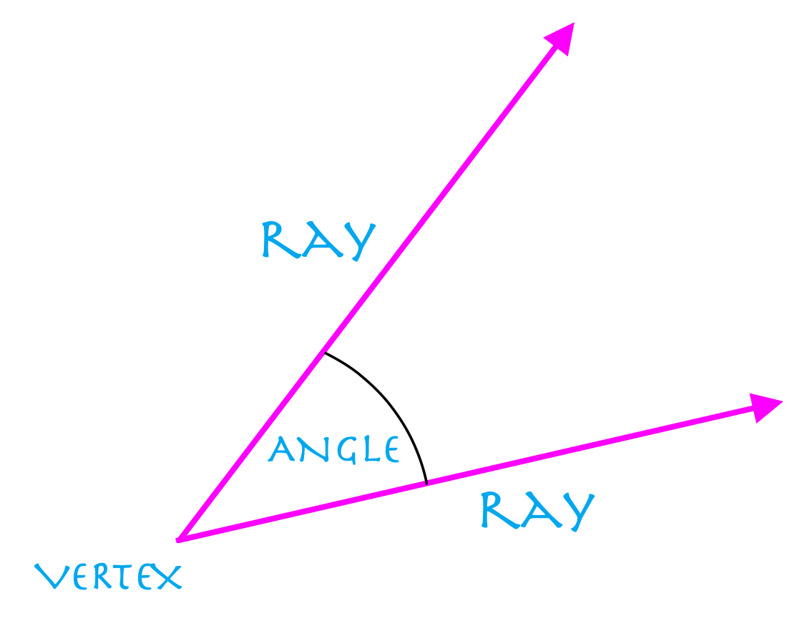
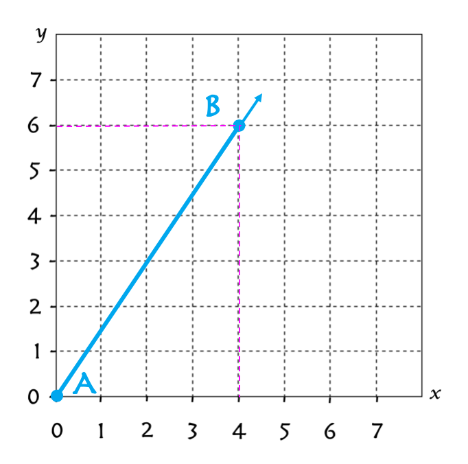
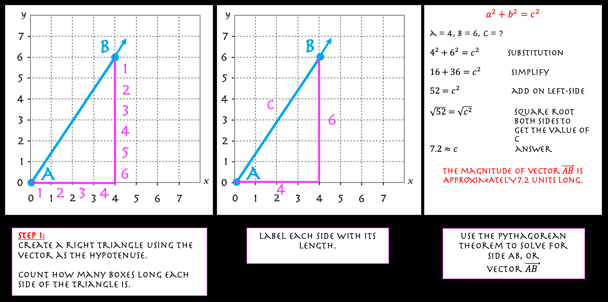
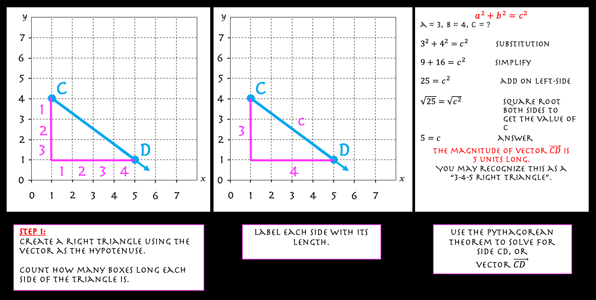
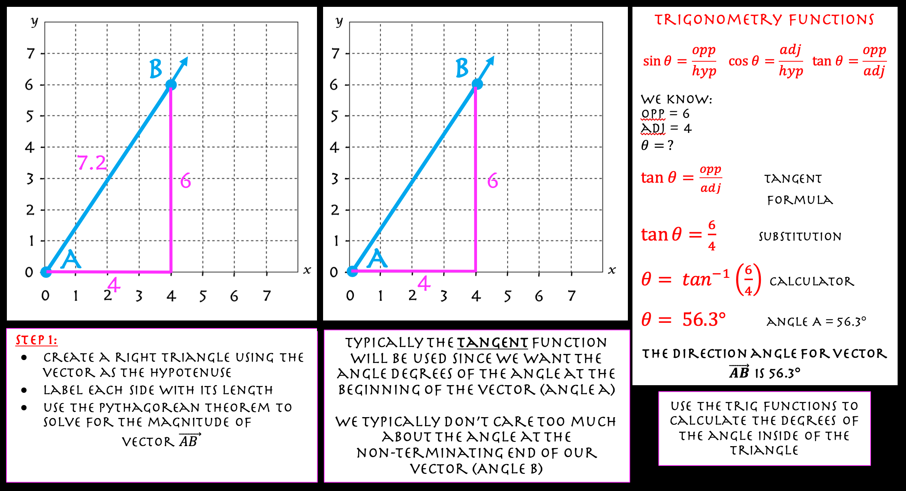
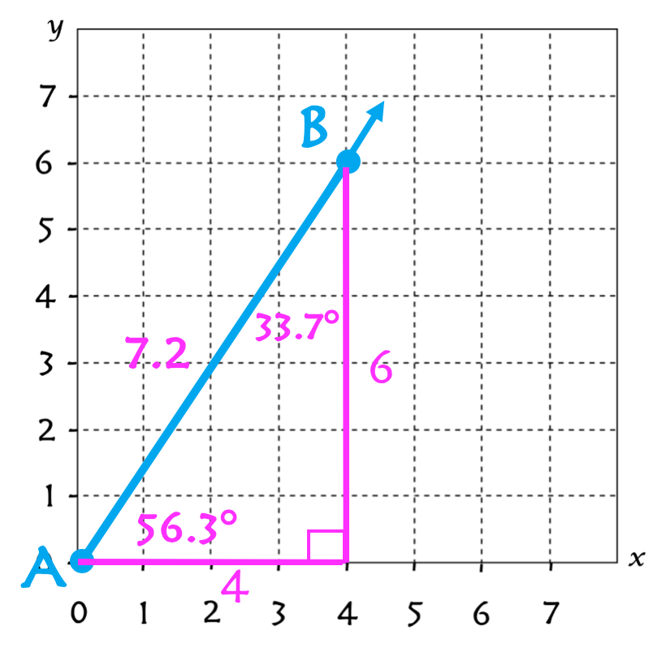
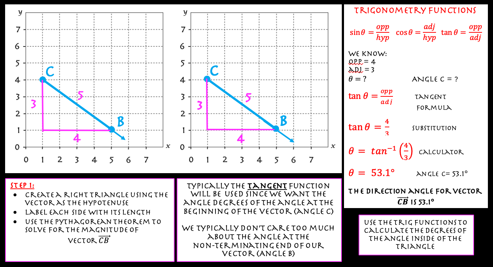
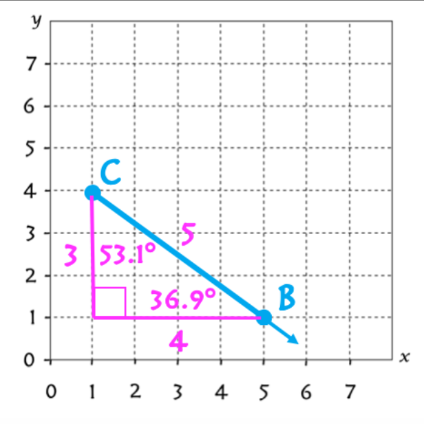
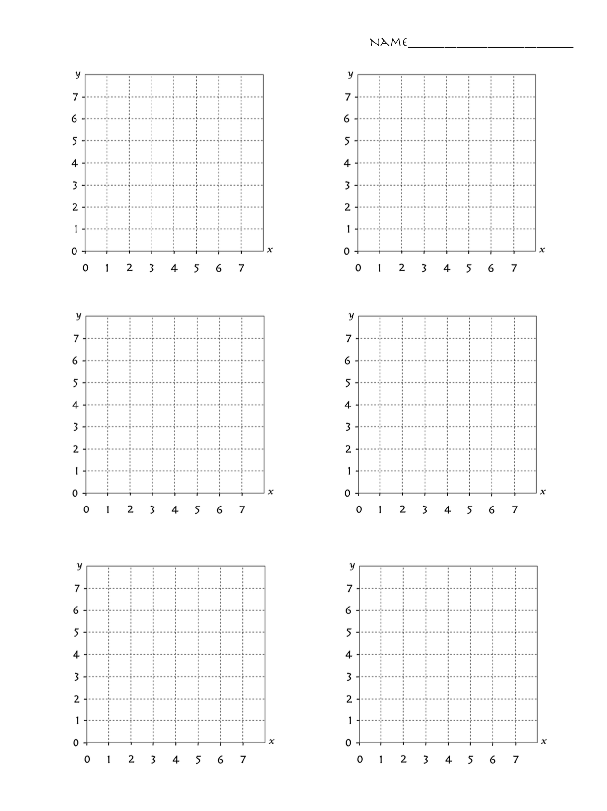

GOAL:
This module covers the Basic Characteristics of Vectors
One method that will help you learn about vectors is creating an
image
of the problem using grid paper or graph paper.
This approach creates a picture that we can use to help us make measurements
related to the vector.
 An 'angle' in Geometry is classified based upon its degrees. Vectors are included under the same classifications.
In this example, vector AB begins at A(0, 0) and passes through the point B(4, 6).
This vector has a length between points A and B.
It also forms an angle between the x-axis and the vector itself.

In this example, vector CD begins at C(0, 0) and passes through the point D(6, 3).
This vector has a length between points C and D.
It also forms an angle between the x-axis and the vector itself.
In this example, vector EF begins at E(1, 2) and passes through the point F(4, 7).
This vector has a length between points E and F.
It forms an angle between the line y = 2 and the vector itself.
In this example, vector GH begins at G(2, 5) and passes through the point F(7, 1).
This vector has a length between points G and H.
It forms an angle between the line y = 5 and the vector itself.
Let's break our problem down into its two seperate measurements:
First, let's begin with how to calculate the "Magnitude", or length of a vector.
In Algebra 1, you learned how to calculate the missing side length of a Right Triangle.
We will create a right triangle out of our vector and calculate the lengths of the legs of
the right triangle by counting how many boxes long each side is.
Then, we will calculate the vector's length using Pythagorean Theorem. Any vector's
magnitude can be calculated using the Pythagorean Theorem.
The Pythagorean Theorem
a2 + b2 = c2
So, let's review how to complete the first calculation.
The first thing you want to do is sketch the vector on your graph paper using the
coordinates of two points that lie on the vector.
Then, you can sketch a right triangle using the vector and sketching the two sides that
form the 90° angle. I will use images from above to help guide you.
Calculating the Magnitude of a Vector
Example #1
Example #2
In summary, the length of a vector can be calculated using the Pythagorean Theorem.
Calculating the Direction Angle of a Vector
To calculate the Direction Angle of a Vector, use Trigonometry functions
SIN, COS, AND TAN to calculate the degrees of any angle inside your right triangle.
The angle you pick to calculate will be the angle related to what information you need
as part of the problem.
Remember the Triangle Sum Rule states that the three interior angles of any triangle add
to equal 180°. You can use this rule to help you solve for the angles inside the triangle.
You must still use Trig to solve for the first angle. Then use Triangle Sum to solve for the
other angle. Don't forget that there is a 90° angle (by design) inside of your triangle.
Example #3
The final solution would have the measurements shown in the image below.
Example #4
The final solution has the measurements shown in the image below.

In summary, the Direction Angle of a vector can be calculated using the
Trig Fumctions: SIN, COS, or TAN
Vectors are easy to work with if you incorporate your knowledge about Geometry
and polygons (their properties), the Pythagorean Theorem, and Trig Functions. Also thinking
of a vector as a ray helps you to learn the concepts of vectors easier.
Vectors are introduced in Geometry, but remain a important part of the advanced maths.
Feel free to print the graph paper below to help you sketch your vectors.
